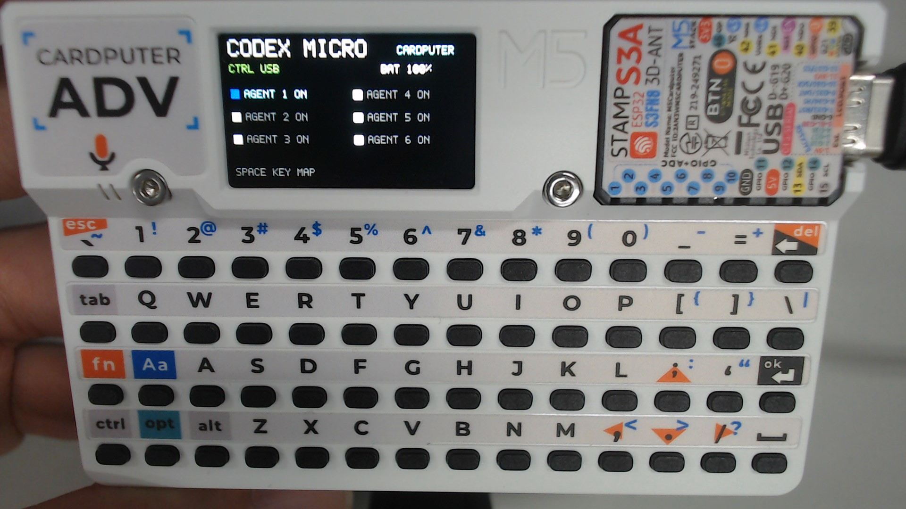

CARDPUTER ADV × CODEX · WINDOWS 11
Cardputer ADV 成為你的 Codex 控制台。
一條 USB-C 線、一次瀏覽器安裝。立即獲得實體按鍵控制、內建麥克風與 BLE 無線備援，不需要 ESP-IDF 或命令列。

WEB INSTALLER · VERSION 1.0.0
準備好 Cardputer，現在直接安裝。
安裝會清除 Cardputer ADV 目前的韌體與設定。僅支援 ADV （StampS3A／ESP32-S3），不支援原版 Cardputer。
INSTALL IN FOUR STEPS
四個步驟完成燒錄
-
01
確認硬體
只使用 M5Stack Cardputer ADV 與可傳輸資料的 USB-C 線。
-
02
進入下載模式
側邊電源切到 OFF 並拔除 USB；按住機頂 G0，插入 USB，通電後放開 G0。
-
03
開始安裝
按「連接並安裝」，選擇新出現的 USB／COM 裝置並確認安裝。
-
04
重新啟動
完成後放開 G0、拔除 USB、側邊電源切到 ON，再插入 USB；LCD 亮起即代表成功。
現在是哪個模式？
正常模式：LCD 會顯示 Codex Micro 操作畫面。 下載／燒錄模式：LCD 通常維持黑畫面，Windows 會出現新的 USB／COM 連接埠。網頁在選取連接埠之前無法自動判斷模式。
切換到燒錄模式：側邊電源切到 OFF 並拔除 USB，按住機頂 G0 後插入 USB，通電後放開 G0。燒錄完成後，放開 G0、拔除 USB、側邊電源切到 ON，再於不按 G0 的情況下插入 USB，裝置就會啟動新韌體。
AFTER INSTALL
接上 Codex，立即使用。
USB 連接時，Windows 11 會看到 Codex 控制介面與 Cardputer ADV Microphone。需要無線控制時，可在藍牙設定配對 Codex Micro。
查看完整按鍵與測試說明 →